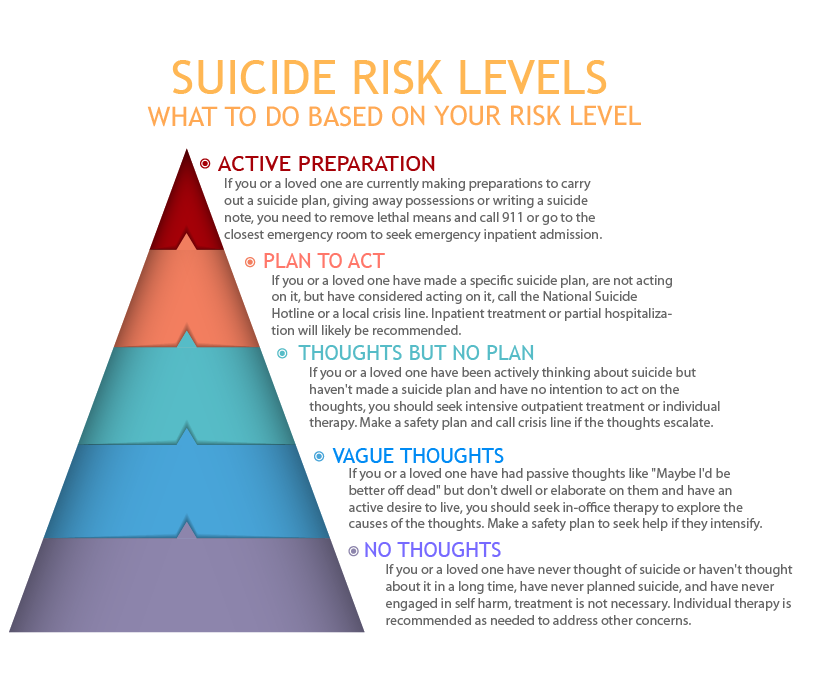

If you are thinking that you might be better off dead, thinking of hurting yourself or attempting suicide, please consider talking to someone.
You may feel that your life will never get better and life is not worth living.
You may feel lonely, no one cares about you, or no one is able to reach you at where you are.
Or you may be feeling something entirely different. It is ok to have these feelings and sometimes it makes you feel clearer when you talk to someone.
Though few people would be able to understand what you are going through, they want to listen to you and look into the abyss with you.
Please give them a chance. Your story is important.
Depending on what you are comfortable with, below are a few options for you to talk to someone.
Call a trusted family or a friend who can listen to you without judgement
Call your therapist, counselor, or doctor’s office
If you feel comfortable seeking emergency services, you can
Call 911 for all emergencies (in the United States)
Call 988 for mental health crisis (in the United States)
Go to a hospital emergency room
Ask a family or friend to make the calls or take you to the hospital
Note. These resources DO NOT arrange emergency servies for you.
Trans Lifeline 1-877-565-8860 for transgender, non-binary, intersex, and others with diverse gender identities.
Call BlackLine 1-800-604-5841 for BIPOC folks.
Samaritans NYC 1-212-673-3000
THRIVE Lifeline offers 24/7 text-based crisis support to anyone 18+ with specific focus on multiply marginalized communities. Text “THRIVE” to begin your conversation with us 24/7/365, from anywhere: +1.313.662.8209
Learn about What Happens When You Call Into A Suicide Prevention Hotline
Text 401-400-2905 to reach Project LETS’s Cisis Support Team for urgent support with psychiatric incarceration/involuntary hospitalization
Note. These resources MAY arrange emergency services for you against your will if they determine that you may be a harm to yourself or others.
Hotlines in the United States (Free 24/7)
Call 988 for the National Suicide & Crisis Lifeline. Si hablas español, llama a 1-888-628-9454. What Happens When I call 988?
Crisis Text Line Text “HOME” to 741741
Veterans Crisis Line Call 988 and press 1, text 838255, or chat online
Call Trevor Lifeline, 1-866-488-7386, a free and confidential suicide hotline for LGBT youth. Or text “START” to 678-678 for their text services.
International Hotlines
Find free and affordable therapy near you and see options fo state sponsored therapy
National Runaway Safeline answer calls, texts and emails from run away youth and concerned adults. It also has a forum and resources
National Sexual Assult Hotline: Call 1-800-656-4673 or chat online
An exhaustive list of Mental Health Resources in the US compiled by the Hamilton Lab
It is important and sometimes scary to help someone who is suffering internally. While emergency services can save lives, they can also lead to further traumatization in some cases. Before you take someone to the hospital, report their suicidal thoughts to the authority, or call emergency services on their behalf, please consider the potential consequences outlined below.
Why do we care about the approach (active vs. no active rescue) these hotlines take?
(some adapted from this Twitter thread by Dr. Emily Krebs)
People experience suicidal thoughts differently. A person may suddenly become suicidal following a recent event, or they can be chronically suicidal, meaning that they always consider suicide as an option at the back of their mind.
Being suicidal does not mean that a person will carry out suicidal behaviors or need to be immediately hospitalized. Yes, hearing that a loved one is thinking about suicide can be incredibly scary, but calling emergency services on them may not be the most helpful approach.
Reporting someone for being suicidal can get them kicked out of college, fired from jobs, and sometimes even lose custody of their kids. Mandatory reporting policies are dangerous & are aimed at protecting businesses and organizations from liability, not helping people.
The UN has called involuntary psychiatric care a form of torture but it’s still regularly practiced on suicidal patients in the US. Involuntary 72-hour (“5150”) holds are the norm for people deemed a threat to themselves. 5150 holds are one of the only legal circumstances in the USA where people can be forced to undergo medical treatments and ingest food or liquids against their will.
Suicide risk following involuntary psychiatric hospitalization skyrockets \(^1\) \(^2\). While 5150 holds may prevent a person from dying in one moment of crisis, they don’t protect people long term. 988 openly engages in nonconsensual active rescue despite its harms and lack of effectiveness. Callers seeking phone support can end up being escorted by police to a psychiatric hospital against their will–sometimes at gunpoint if the officers deem the person dangerous. Individual who belong to racial or gender minority groups or have disabilities face greater risk of being traumatized.
Text 401-400-2905 for urgent support with psychiatric incarceration/involuntary hospitalization
a 5 minute video on Managing a Mental Health Emergency without breaking the trust
The Five Action Steps for communicating with someone who may be suicidal
The #RealConvo Guide on How to Start (and Continue!) a Conversation About Mental Health
Alliance of Hope for Suicide Loss Survivors has many resources about people’s grief journey, including a forum for the community and support groups
American Foundation for Suicide Prevention’s Resources on I’ve lost someone
What are suicide risk levels and what to do at each level? (by Open Counseling) 
Unpacking Self-Harm: Understanding What It Is and Why It Helps
Learn from the lived experiences of suicide survivors
Learn from the lived experiences of people who self-injure
Learn about anti-carceral mental healthcare practices (meaning care where patients don’t lose their rights or autonomy)
Discussions on Decarerating Care by the Institute for the Development of Human Arts that advocates for Transformative Mental Health which focuses on systematic change, experiential knowledge and holistic care.
“Project LETS is a national grassroots organization and movement led by and for folks with lived experience of mental illness/madness, Disability, trauma, & neurodivergence. … We work for and with multiply marginalized folks in our communities to provide access, political education, & material resources that are needed to survive and thrive.”
“Fireweed Collective offers mental health education and mutual aid through a Healing Justice and Disability Justice lens.” They provide support groups, workshops, and an awesome crisis toolkit.
“Mad In America’s mission is to serve as a catalyst for rethinking psychiatric care in the United States (and abroad). We believe that the current drug-based paradigm of care has failed our society, and that scientific research, as well as the lived experience of those who have been diagnosed with a psychiatric disorder, calls for profound change.” They use “a mix of journalism, education and societal discussion” to “provide the seed for a much-needed remaking of mental health care in the United States and globally.”
Trans Lifeline has an incredible resources page for all sorts of struggles, especially for people with minorotized gender and racial identities with limited financial resources.
Please email me if you are interested in collaborating or need help with your educational path.
Share your comments, concerns, suggestions, or additional resources here.
Page last updated: 2023-07-05